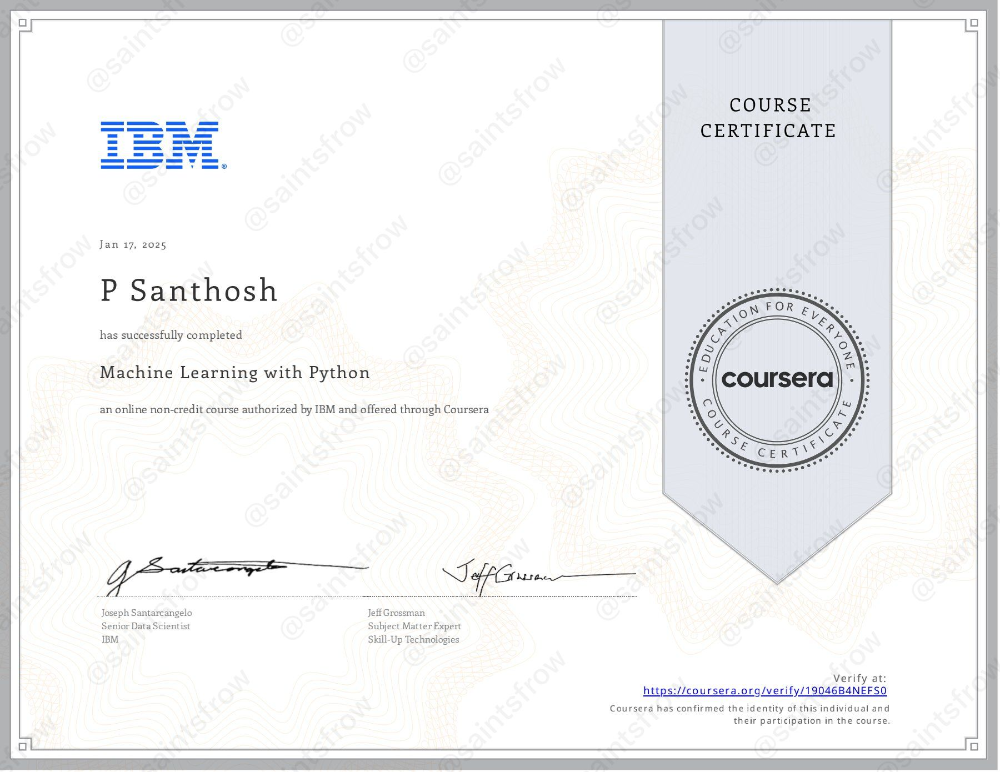
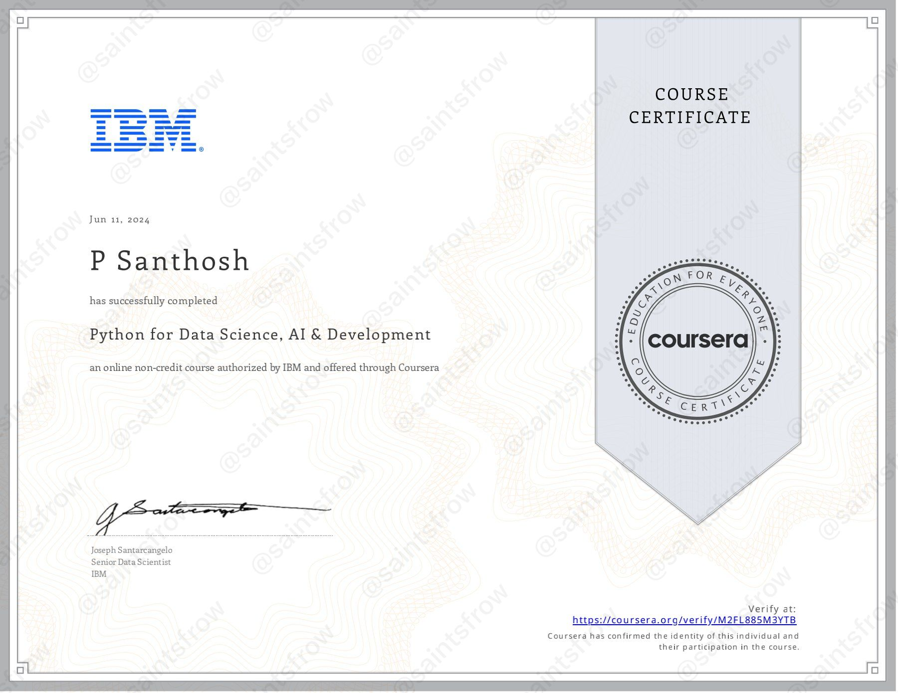
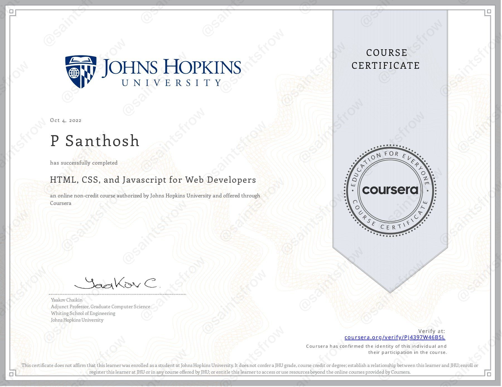

COURSERA Certificates
Machine Learning for Python Course significantly enhanced my skills in this vital area. The curriculum covered core ML concepts and provided hands-on experience with libraries like Scikit-learn, TensorFlow, and Pandas. I learned statistical methods such as linear and logistic regression and explored supervised and unsupervised learning techniques. The guidance on model evaluation and tuning techniques was particularly helpful. Overall, this course equipped me with the practical skills necessary to excel in machine learning.
Python for Data Science Course had been a beginner-friendly self-paced course in Python, and it was an excellent introduction to programming. The course quickly took me from zero to programming in Python, covering essential topics like data types, data structures (such as lists and tuples), and logic concepts like conditions and branching. I gained hands-on experience with Python libraries like Pandas, NumPy, and Beautiful Soup, learning to perform tasks such as data collection and web scraping using APIs. The practical labs in Jupyter Notebooks allowed me to apply what I learned effectively. By the end of the course, I felt comfortable creating basic programs and automating real-world tasks, making it a great foundation for anyone interested in Data Science, Software Development, or AI.
HTML, CSS, and Javascript for Web Developers Course provided a solid foundation in the essential tools for creating modern web pages. The course emphasized the importance of user experience, teaching me how to implement responsive designs using HTML and CSS. I learned to code web pages that automatically rearrange and resize based on the user's screen size, ensuring a seamless experience across devices without the need for "pinch and zoom." Additionally, I gained a thorough introduction to JavaScript, the powerful language of the web, which enabled me to build fully functional web applications that utilize Ajax for server-side functionality. This course has significantly enhanced my skills in web development and prepared me to create efficient and user-friendly applications.